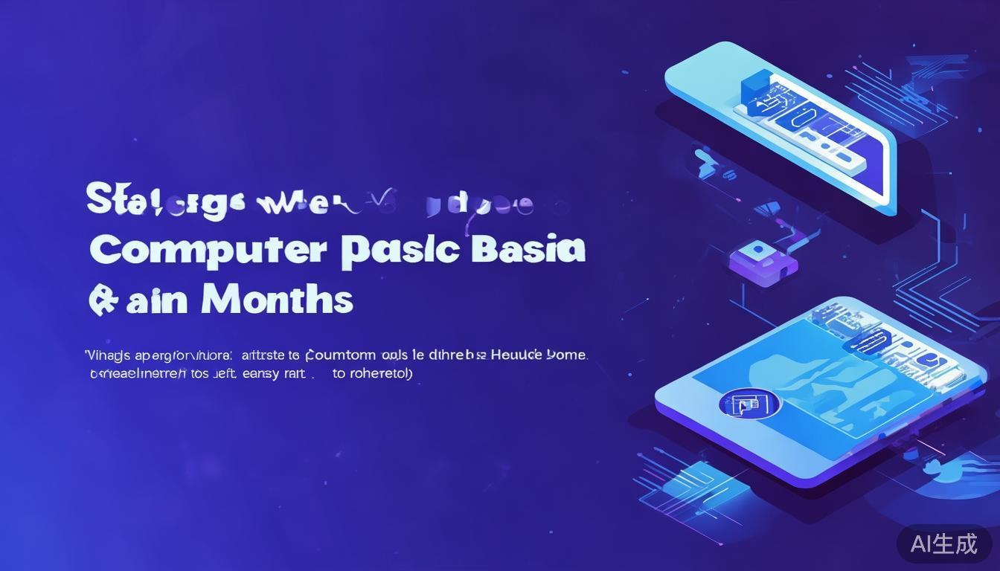

白驹 · 全局大脑 · 科学实验室
编程与计算机学习路线（AI 时代版）
目标：从零到能写代码、能用 AI 加速、能看懂底层。路径分四阶段，附每阶段可实践内容。
阶段一：编程入门（1–2 个月）
- 语言选 Python（生态全、语法简单、工科/数据/AI 通用）。
- 掌握：变量、类型、条件、循环、函数、类、文件读写、异常。
- 实践：本目录
01_python_basics.py全示例；把每个示例改写一遍。 - 工具：VS Code（code.visualstudio.com）+ Python（python.org）。
阶段二：计算机基础（2–3 个月）

- 计算机组成：CPU/内存/总线/冯诺依曼结构。
- 操作系统：进程/线程/文件系统/内存管理。
- 数据结构与算法：数组、链表、栈队列、树、哈希表、排序、递归、复杂度。
- 计算机网络：TCP/IP、HTTP、DNS。
- 实践：用 Python 实现链表、二分查找、快速排序；看懂
ping、http请求。 - 推荐公开课：CS50（哈佛）、南京大学/清华公开课、中国大学 MOOC。
阶段三：AI 时代怎么"操控"编程（贯穿全程）
- 让 AI 当老师：不懂就问 DeepSeek「用大白话解释递归」。
- 让 AI 当结对程序员：用 Cursor/Claude Code/通义灵码写代码、补全、排错。
- 会看会改：AI 生成的代码一定要能读懂、能改、能测（写测试是硬要求）。
- 学提示词写代码：见《DeepSeek 提示词宝典》代码篇——"分步生成、指定技术栈、让 AI 自查、要求测试"。
阶段四：方向进阶（选 1–2 个深耕）
- Web：HTML/CSS/JS 框架 部署（可先做本项目里的网站）。
- 数据/AI：numpy/pandas 机器学习 大模型应用。
- 嵌入式/工控：C Arduino 单片机 与数控/传感器结合。
- 算法/竞赛：LeetCode 刷题。
附：90 天可执行计划
| 周 | 任务 |
|---|---|
| 1–4 | Python 基础 + 每天 1 小时 + 手写 50 个小程序 |
| 5–8 | 数据结构与算法 + LeetCode 简单题 50 道 |
| 9–12 | 用 AI 结对做 1 个完整小项目（如计算器/爬虫/网站），全程写测试 |